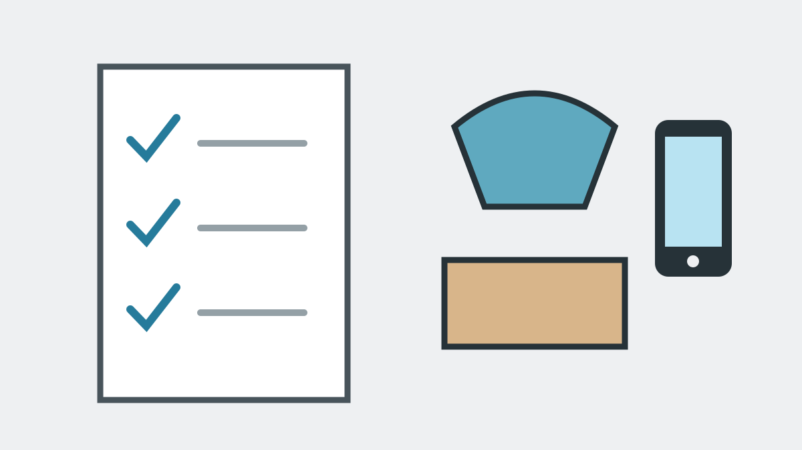

Canyoning-Checkliste für euren JGA
Diese Checkliste hilft euch, die Canyoning-Tour gut vorzubereiten. Ab dem Treffpunkt übernehmen wir das Canyoning-Programm. Ihr müsst innerhalb der Gruppe vor allem Voraussetzungen, Teilnehmerdaten und persönliche Sachen koordinieren.
Vor der Anfrage
- Wunschtermin und ungefähre Teilnehmerzahl sammeln.
- Grundfitness und Trittsicherheit der Gruppe realistisch einschätzen.
- Höhenangst, Wasserangst und sportliche Erwartungen ansprechen.
- Relevante gesundheitliche Einschränkungen vertraulich mit den betroffenen Personen klären.
- Tour auswählen oder „Noch unsicher, bitte Tour empfehlen“ anfragen.
Wir antworten während unserer üblichen Erreichbarkeit meistens innerhalb von 10 Minuten. Die Anfrage ist unverbindlich.
Nach der Buchungsbestätigung
- Namen sowie Gewichte, Körper- und Schuhgrößen gesammelt an uns übermitteln.
- Packliste weitergeben.
- Alkohol und berauschende Mittel vor und während der Tour ausdrücklich ausschließen.

Am Tourtag mitbringen
- Badekleidung für unter den Neoprenanzug (Kann sowohl enge Badehose bzw. Bikini als auch lockere Shorts sein).
- Handtuch.
- Trockene Wechselkleidung für danach.
- Falls nötig: Persönlich benötigte Medikamente (Asthma-Spray, Ersatz-Kontaktlinsen, Insulin, etc.).
Das stellen wir
- Neoprenanzug und Neoprensocken.
- Helm und Canyoning-Gurt.
- Spezielle Canyoning-Schuhe.
- Technische Seil- und Sicherheitsausrüstung.
- Transfer ab dem Treffpunkt zum Einstieg und zurück.
- Fotos und Videos über einen privaten Download-Link.
- Kleinen Snack und Getränke während längeren Touren.
- Snack sowie Bier, Radler oder Limo nach der Tour.
Handy, GoPro, Brille und Kontaktlinsen
GoPros und Handys in geeigneter wasserdichter Hülle sind nach Rücksprache möglich. Eigene Actionkameras müssen geeignet gesichert sein. Brillen werden auf eigene Verantwortung getragen, Kontaktlinsen sind in der Regel unproblematisch. Wir erstellen ausreichend Fotos und Videos, sodass persönliche Geräte nicht notwendig sind.